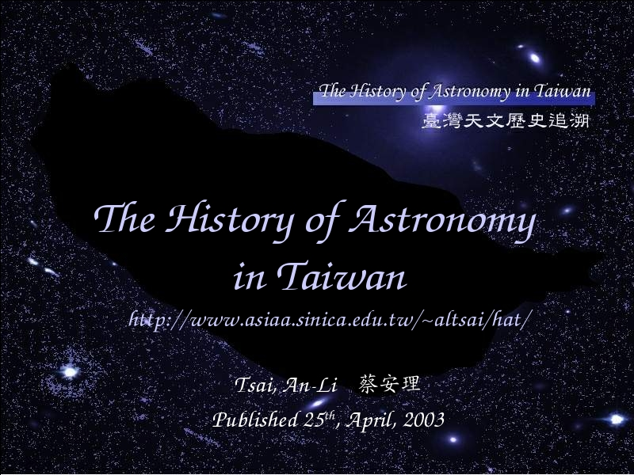

Voice Over:
Hello, everyone. Today I am going to talk about The Histroy of Astronomy in Taiwan.
To find out the Astronomical Histroy is a project with huge concept.
In my website,
https://tara.tw/~altsai/hat/
only shows you a small part of this project.
So this talk do not give you the english version of my website, that is not interesting.
I am going to talk about the whole concept of Tracing Astrnomical Histroy in Taiwan.